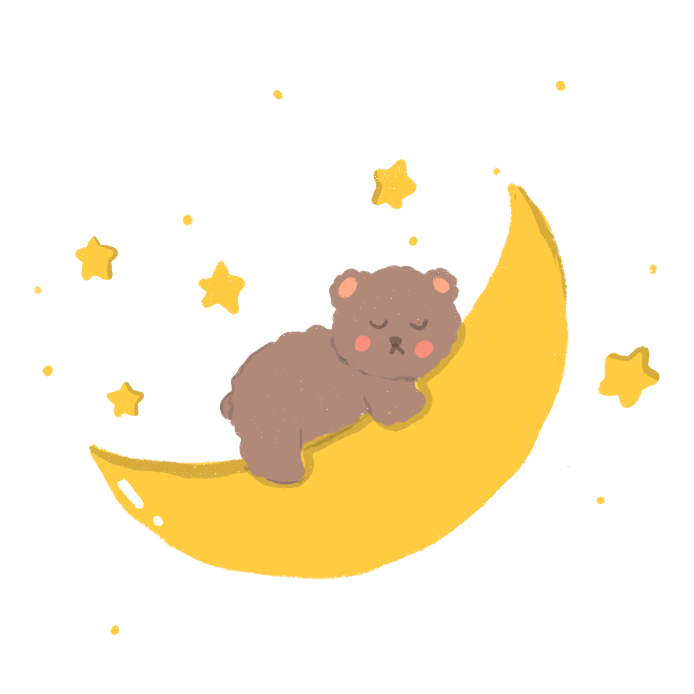

STARDREAMS
COMO FUNCIONA
-
Botão de Gravar:Clique neste botão para iniciar a gravação da sua voz. Assim que você clicar,
o
site
começará a capturar o áudio.
-
Botão Parar: Quando você terminar de falar, clique no botão parar. Isso encerrará a
gravação e
salvará
a sua nota.
-
Ícone de Lápis: Se você quiser editar a nota que acabou de gravar, clique no ícone de
lápis.
Isso
abrirá uma tela onde você poderá fazer alterações no texto da sua nota.
-
Ícone de Lixeira: Caso decida que não precisa mais da nota, clique no ícone de lixeira.
Isso
excluirá a
nota permanentemente.